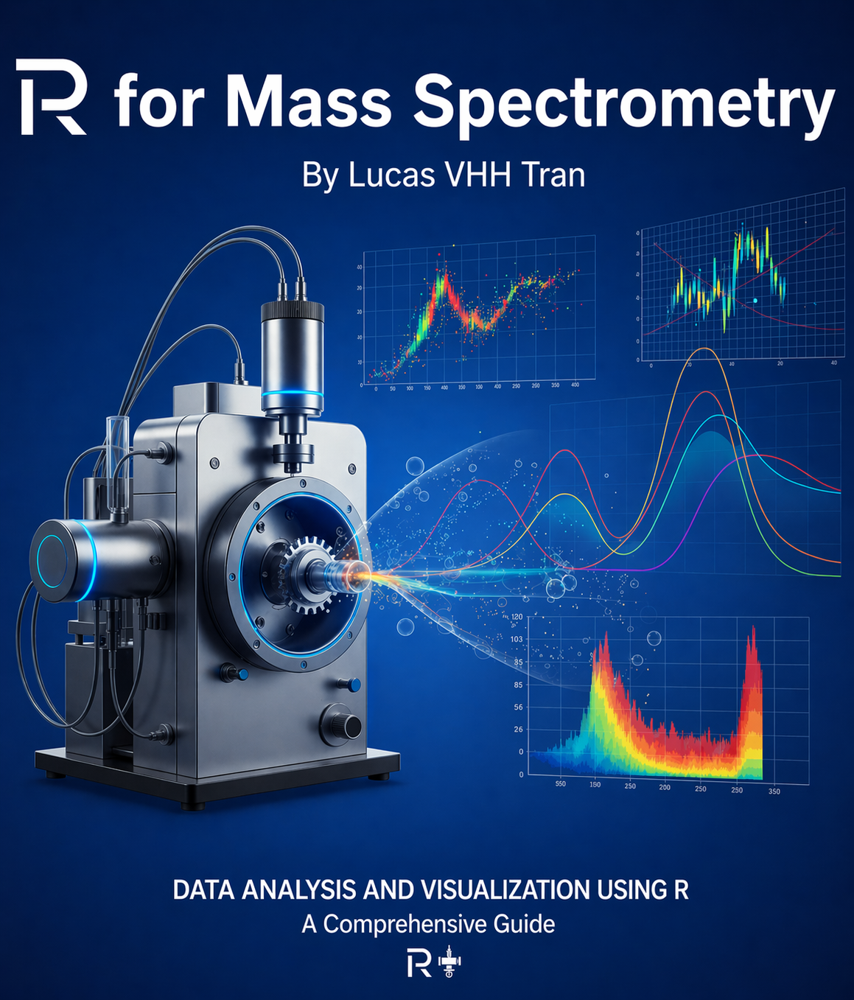

Code
# Example of loading key packages
library(Spectra)
library(xcms)
library(tidyverse)
library(ggplot2)A Practical Guide to Reproducible Proteomics and Metabolomics with Bioconductor

A mass spectrometer can weigh a molecule to five decimal places. Turning millions of those measurements into a defensible biological conclusion — reproducibly, in both proteomics and metabolomics — is a different skill entirely, and it is the one this book teaches. Mass Spectrometry Data Analysis with R is a hands-on guide to that craft, built on the R programming language and the Bioconductor ecosystem designed for it.
Mass spectrometry (MS) has become an indispensable tool in analytical chemistry, proteomics, metabolomics, and many other scientific disciplines. As the complexity and volume of MS data continue to grow, computational tools for data processing and analysis have become essential. R, with its extensive statistical capabilities and specialized packages for mass spectrometry, provides an excellent platform for comprehensive MS data analysis.
This book aims to bridge the gap between mass spectrometry theory and practical computational implementation, providing readers with both conceptual understanding and hands-on experience in MS data analysis using R.
This book is designed for:
Readers should have:
By the end of this book, you will be able to:
renv, targets, and QuartoSpectra frameworkxcmsQFeaturesThe book is organized into seven thematic parts that follow the natural arc of an MS data analysis project:
Chapter 1 — What Is Mass Spectrometry? Instrument concepts, acquisition modes, and common data artifacts every analyst must recognize.
**Part I — Foundations: Reproducible MS Analysis in R (Chapters 2–6): R and Bioconductor for MS data analysis; building a reproducible project with renv and targets; importing MS data files; constructing analysis-ready data objects; and performing initial quality control.
**Part II — Feature Detection and Identification (Chapters 7–11): Detecting chromatographic features with xcms, auditing peptide–spectrum matches, assembling protein evidence, annotating metabolites, and searching spectral libraries.
**Part III — Quantification Workflows (Chapters 12–16): Building quantitative proteomics objects, label-free and TMT quantification, targeted quantification, and metabolomics pipeline construction.
**Part IV — Normalization, Batch Correction, and Missing Data (Chapters 17–18): Normalizing across samples and batches, and handling missing values.
**Part V — Statistical Modeling and Machine Learning (Chapters 19–23): Experimental design and power, differential abundance analysis with design matrices, modeling covariates and repeated measures, machine learning for MS data (tidymodels, regularized regression, tree ensembles, class imbalance, calibration), and biomarker modeling without data leakage.
**Part VI — Biological Interpretation and Reproducible Reporting (Chapters 24–25): Pathway and network analysis for integrated MS-omics data, and building reproducible, publication-ready reports.
**Part VII — Capstone: End-to-End Case Studies (Chapter 26): Two complete, reproducible analyses — a real label-free proteomics study and a real untargeted metabolomics study — carried from raw data to interpreted, deposit-ready results with the same shared toolchain.
The book closes with a summary, references, and six appendices:
scp (SCP data model, QC, filtering, normalization, and differential analysis)Cardinal (import, visualization, preprocessing, and spatial analysis of imaging MS data)The book rewards a straight read, but it is built so you can follow the track that matches your work. Every path shares the same foundations, preprocessing, statistics, and reporting — only the identification and quantification chapters differ.
Whichever path you take, the capstone (Chapter 26) shows both studies side by side — the clearest demonstration that the two fields share one computational grammar in R.
Spectra, xcms, QFeatures. Functions are shown with parentheses: findChromPeaks(). When a function’s package is not obvious from context, it is qualified as package::function().#| eval: false because they require data or network access; demonstration chunks run against bundled example data.msdata, faahKO, MsDataHub) so they reproduce without external downloads. Chapters that demonstrate importing from public repositories include stable accession numbers and retrieval instructions.To follow along with the examples in this book, you’ll need to install R (≥ 4.4), Bioconductor (≥ 3.20), and several specialized packages. Installation is covered in Chapters 2 and 3; Appendix A lists every package used, with its source and role.
# Example of loading key packages
library(Spectra)
library(xcms)
library(tidyverse)
library(ggplot2)This book is written as a set of literate, reproducible programs. All source (Quarto .qmd files), the rendered book, and the package lockfile are available in the companion repository:
The examples depend only on openly available example-data packages from Bioconductor (msdata, faahKO, MsDataHub), so no proprietary data is required to reproduce them. Readers are encouraged to clone the repository and re-render the book to confirm reproducibility on their own systems. Each chapter ends with its session information; the Bioconductor and CRAN packages used are catalogued in Appendix A.
This book builds upon the excellent work of the R for Mass Spectrometry community and the developers of key packages including Spectra, xcms, MSnbase, and many others.
The materials, examples, and code samples in this book are provided for educational purposes only and are offered “as is,” without warranty of any kind, express or implied, including but not limited to warranties of merchantability, fitness for a particular purpose, or noninfringement. While the author has made reasonable efforts to ensure the accuracy of the content, no guarantee is made as to its completeness or suitability. Readers who adopt, run, or modify any code or follow any procedure do so entirely at their own risk. Under no circumstances shall the author be liable for any loss, damage, or other liability, whether in an action of contract, tort, negligence, or otherwise, arising from or in connection with the use of this book.
This book is a living document. Please report errors, suggest improvements, or request additional topics through the book’s repository.
Let’s begin our journey into the world of mass spectrometry data analysis with R!